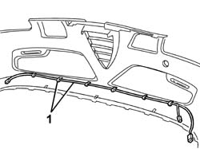

7205E10 STRIPPING FRONT BUMPER
- Path
- Procedures > 72 PANELS AND FRAME > 7205 STRIPPING FOR REPLACEMENT OPERATIONS > 7205E EXTERIOR PARTS > 7205E10 STRIPPING FRONT BUMPER
- Kind
- repair procedure (removal / refitting; the operation number is the code)
- Applies to
- all engines; all production periods
- Interactive page
- https://sloeber94.github.io/elrnDB-aGt/en/#/125002014
Applies to: engines: 2.0 JTS, 3.2 V6, 1.9 JTD 16V; all production periods
 Removing
Removing
 Refitting
RefittingOp. 7055A40 RADIATOR SHIELD - R R
Op. 7055A39 LEFT SIDE FRONT GRILLE R R
(right and left)
Op. 7055B26 COVER (ONE) ON BUMPERS - R+R
Op. 5550C30 L/H OR R/H FRONT TURN SIGNAL (ONE) - R+R
(right and left)
1. Disconnect the front direction indicator wiring from the retainers, then remove.

Applies to: engines: 2.0 JTS, 3.2 V6, 1.9 JTD 16V; all production periods
Refitting
RemovingCheck that the removed parts are undamaged.
Posiiton the front direction indicator wiring and secure to the retainers.
Op. 5550C30 L/H OR R/H FRONT TURN SIGNAL (ONE) - R+R
(right and left)
Op. 7055B26 COVER (ONE) ON BUMPERS - R+R
Op. 7055A39 LEFT SIDE FRONT GRILLE R R
(right and left)
Topics linked from this page (4)
- 5550C30 L/H OR R/H FRONT TURN SIGNAL (ONE) - R+R
- 7055A39 LEFT SIDE FRONT GRILLE R R
- 7055A40 RADIATOR SHIELD - R R
- 7055B26 COVER (ONE) ON BUMPERS - R+R